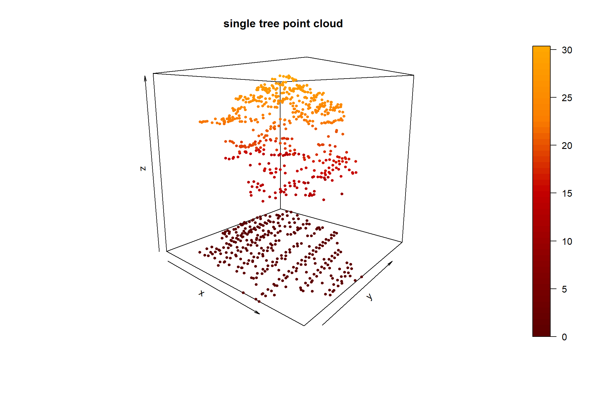
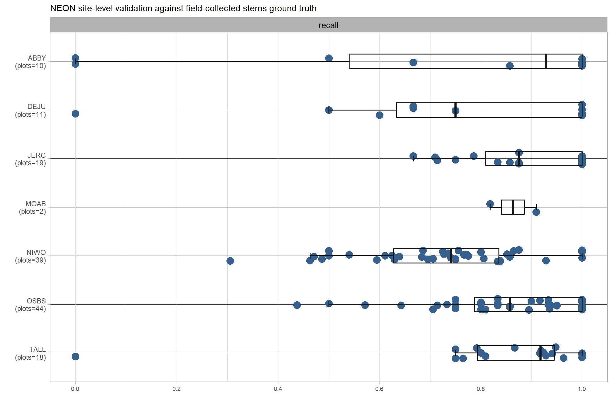
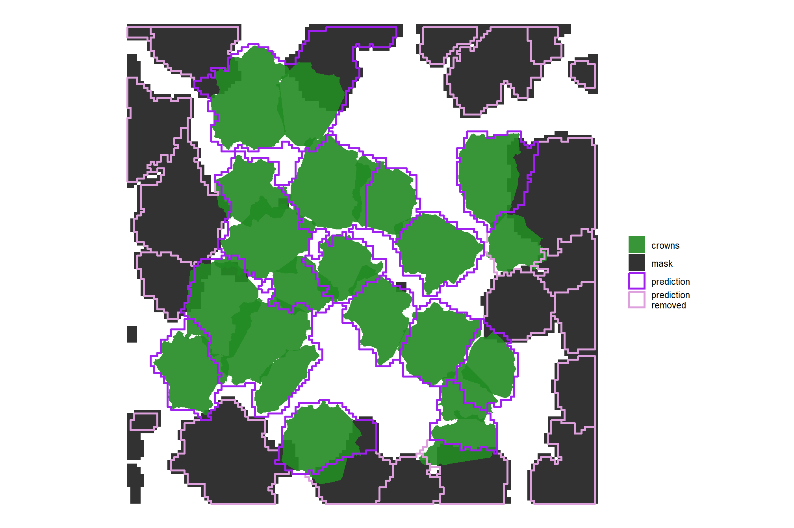

Section 6 Tree Biomass Process
In this section we’ll use the benchmark data made available in the NeonTreeEvaluation data set (Weinstein et al. 2021) to test a process for estimating biomass in kg at the tree level. The ultimate goal is to incorporate this process in the cloud2trees package (Woolsey and Tinkham, 2024).
We will test out three methods for attaching biomass in kg to a spatial tree list:
- Estimate single tree biomass (kg) using allometric equations based on predictors such as tree diameter, height, and species
- This methodology is well represented in the literature with allometries developed for nearly all tree species (Chojnacky et al. 2014; Ter-Mikaelian & Korzukhin 1997)
- Gonzalez‐Akre et al. (2022) developed an R package to perform this exact task:
allodb.
- Use models developed to predict canopy fuel stratum at the stand level based on common stand descriptors (e.g. TPH and basal area) and distribute the stand-level estimate (in kg per m2 or kg per m3) across the individual trees in the stand
- Cruz et al. (2003) developed models to predict canopy fuel stratum at the stand level for four coniferous forest types common in the western US: Douglas-fir, ponderosa pine, lodgepole pine, and mixed conifer.
- Models for other forests types are currently lacking which limits the scope of this methodology
- Use raster estimates of canopy fuel stratum such as the LANDFIRE database developed jointly by the USDA Forest Service and USDOI Office of Wildland Fire (OWF) and distribute the fuel estimate across the individual trees that fall in a raster cell
- There is an R package for accessing the LANDFIRE data
rlandfire
- There is an R package for accessing the LANDFIRE data
6.1 Preliminaries
Like Cruz et al. (2003), we’ll use the term “crown” to describe aerial fuels at the tree level and the term “canopy” at the stand level.
Below, we provide an overview of some commonly used fuel complex characteristics: canopy fuel load (CFL) and canopy bulk density (CBD). In simple terms, imagine a box filled with leaves, fuel load represents the total weight of all the leaves in the box while bulk density represents how tightly those leaves are packed within the box.
Canopy Fuel Load
- Definition: The total amount of flammable material (like leaves, needles, branches) within the tree crowns in a given area.
- Focus: Primarily on the mass of the fuel.
- Units: Typically expressed in units of mass per unit area (e.g., kilograms per square meter, tons per acre).
- Scope: Fuel load focuses on the overall amount of fuel.
- Significance: Important for understanding the overall fire potential of an area. A higher fuel load generally means more potential fuel for a fire to consume.
Canopy Bulk Density
- Definition: The mass of flammable material per unit volume of the tree crown.
- Focus: Considers both the mass of fuel and the space it occupies.
- Units: Typically expressed in units of mass per unit volume (e.g., kilograms per cubic meter).
- Scope: Bulk density considers how the fuel load is distributed within the tree crown.
- Significance: Crucial for predicting how easily a fire can spread through the tree crowns. Higher bulk density can increase the likelihood of crown fires.
6.2 Data Load
load the libraries
# bread-and-butter
library(tidyverse) # the tidyverse
library(viridis) # viridis colors
library(harrypotter) # hp colors
library(RColorBrewer) # brewer colors
library(scales) # work with number and plot scales
library(latex2exp)
# visualization
library(mapview) # interactive html maps
library(kableExtra) # tables
library(patchwork) # combine plots
library(ggnewscale) # ggnewscale
library(rgl) # rgl plotting
# spatial analysis
library(terra) # raster
library(sf) # simple features
library(lidR) # lidar data
library(cloud2trees) # tha cloud2trees
library(NeonTreeEvaluation) # benchmark data
library(allodb) # allometric biomass (kg) estimates6.3 Example Lidar Data
Let’s load an example lidar dataset from Weinstein et al. (2021) in their NeonTreeEvaluation package.
We’ll use data from a NEON site that we know has conifers: RMNP (Rocky Mountain National Park)
# get the laz file path
las_f_path_temp <- system.file(package = "NeonTreeEvaluation", "extdata") %>%
list.files(recursive = T, pattern = ".*\\.(laz|las)$", full.names = T) %>%
unique() %>%
dplyr::as_tibble() %>%
dplyr::rename(f_path = 1) %>%
dplyr::filter(
stringr::str_detect(f_path, "RMNP")
) %>%
dplyr::slice(15) %>%
dplyr::pull(f_path)check the data
# check the data
lidR::readLAS(las_f_path_temp) %>%
lidR::plot(
color = "Z", breaks = "quantile", bg = "white", legend = T
, pal = harrypotter::hp(n=50, house = "gryffindor")
)6.3.1 cloud2trees that lidar data
extract trees from the lidar data using cloud2trees
we will estimate DBH, CBH, and forest type for this data
# save our output_dir
od <- tempdir()
# cloud2trees
cloud2trees_ans <- cloud2trees::cloud2trees(
input_las_dir = las_f_path_temp
, output_dir = od
, keep_intrmdt = T
, estimate_tree_dbh = T
, estimate_tree_type = T
, estimate_tree_hmd = T
, estimate_tree_cbh = T, cbh_estimate_missing_cbh = T, cbh_tree_sample_n = 55
)let’s see what we got
## Rows: 138
## Columns: 25
## $ treeID <chr> "1_454102.1_4446100.6", "2_454103.9_4446100.…
## $ tree_height_m <dbl> 12.594, 13.866, 8.038, 9.927, 8.025, 13.000,…
## $ crown_area_m2 <dbl> 2.4375, 0.6250, 0.5625, 0.5625, 0.5625, 4.43…
## $ fia_est_dbh_cm <dbl> 19.88152, 22.40118, 11.87434, 15.11125, 11.8…
## $ fia_est_dbh_cm_lower <dbl> 11.625882, 13.396320, 6.929623, 8.887575, 6.…
## $ fia_est_dbh_cm_upper <dbl> 30.01302, 33.66178, 17.91061, 22.93558, 17.9…
## $ dbh_cm <dbl> 19.88152, 22.40118, 11.87434, 15.11125, 11.8…
## $ is_training_data <lgl> FALSE, FALSE, FALSE, FALSE, FALSE, FALSE, FA…
## $ dbh_m <dbl> 0.1988152, 0.2240118, 0.1187434, 0.1511125, …
## $ radius_m <dbl> 0.09940762, 0.11200591, 0.05937169, 0.075556…
## $ basal_area_m2 <dbl> 0.03104482, 0.03941230, 0.01107411, 0.017934…
## $ basal_area_ft2 <dbl> 0.3341665, 0.4242340, 0.1192017, 0.1930476, …
## $ ptcld_extracted_dbh_cm <dbl> NA, NA, NA, NA, NA, NA, NA, NA, NA, NA, NA, …
## $ ptcld_predicted_dbh_cm <dbl> NA, NA, NA, NA, NA, NA, NA, NA, NA, NA, NA, …
## $ tree_cbh_m <dbl> 6.500000, 6.425167, 5.091628, 5.576400, 5.08…
## $ is_training_cbh <lgl> TRUE, FALSE, FALSE, FALSE, FALSE, FALSE, FAL…
## $ forest_type_group_code <chr> "280", "280", "280", "280", "280", "280", "2…
## $ forest_type_group <chr> "Lodgepole pine group", "Lodgepole pine grou…
## $ hardwood_softwood <chr> "Softwood", "Softwood", "Softwood", "Softwoo…
## $ comp_trees_per_ha <dbl> NA, NA, NA, NA, NA, NA, NA, NA, NA, NA, NA, …
## $ comp_relative_tree_height <dbl> NA, NA, NA, NA, NA, NA, NA, NA, NA, NA, NA, …
## $ comp_dist_to_nearest_m <dbl> NA, NA, NA, NA, NA, NA, NA, NA, NA, NA, NA, …
## $ max_crown_diam_height_m <dbl> NA, NA, NA, NA, NA, NA, NA, NA, NA, NA, NA, …
## $ is_training_hmd <lgl> NA, NA, NA, NA, NA, NA, NA, NA, NA, NA, NA, …
## $ geometry <POINT [m]> POINT (454102.1 4446101), POINT (45410…create a column filter for columns not to see in the glimpse()s below
col_not_sel <- c(
"fia_est_dbh_cm", "fia_est_dbh_cm_lower", "fia_est_dbh_cm_upper"
, "dbh_m", "radius_m","basal_area_ft2"
, "ptcld_extracted_dbh_cm","ptcld_predicted_dbh_cm","is_training_cbh"
, "forest_type_group", "hardwood_softwood", "comp_trees_per_ha"
, "comp_relative_tree_height","comp_dist_to_nearest_m","is_training_hmd"
, "geometry"
)where is this?
zoom out if you can’t see anything
what does our CBH data look like?
cloud2trees_ans$treetops_sf %>%
ggplot(mapping = aes(x = tree_height_m, y = tree_cbh_m, color = is_training_cbh)) +
geom_point() +
scale_color_viridis_d() +
labs(x = "height (m)", y = "CBH (m)", color = "is CBH\nfrom cloud") +
theme_light()
what does our DBH data look like?
cloud2trees_ans$treetops_sf %>%
ggplot(mapping = aes(x = tree_height_m, y = dbh_cm)) +
geom_point(color = "navy") +
labs(x = "height (m)", y = "DBH (cm)") +
theme_light()
how about the forest type?
## # A tibble: 1 × 2
## forest_type_group n
## <chr> <int>
## 1 Lodgepole pine group 1386.4 Method 1: single tree biomass (kg) using allometric equations
The first method we’ll explore for attaching biomass in kg to a spatial tree list is estimating single tree biomass (kg) using allometric equations based on predictors such as tree diameter, height, and species.
This methodology is well represented in the literature with allometries developed for nearly all tree species (Chojnacky et al. 2014; Ter-Mikaelian & Korzukhin 1997). Gonzalez‐Akre et al. (2022) developed an R package to perform this exact task: allodb.
6.4.1 Define species based on forest type group
cloud2trees gives us USDA Forest Inventory and Analysis (FIA) forest type group codes when we set the parameter estimate_tree_type = T. However, the allodb package requires genus and species information to estimate tree biomass. We need to make or find a lookup table to map the FIA forest type group to the genus and species.
Alternatively, we can use the allodb::new_equations() function to modify the set of equations that will be used to estimate the biomass
6.4.1.1 Manual
we can manually set the genus and species to PICO
cloud2trees_ans$treetops_sf$allodb_biomass_kg <- allodb::get_biomass(
dbh = cloud2trees_ans$treetops_sf$dbh_cm
, genus = rep("Pinus", times = nrow(cloud2trees_ans$treetops_sf))
, species = rep("contorta", times = nrow(cloud2trees_ans$treetops_sf))
, coords =
cloud2trees_ans$treetops_sf %>%
sf::st_transform(crs = sf::st_crs(4326)) %>%
sf::st_coordinates() %>%
dplyr::as_tibble()
)what did we get back?
## Min. 1st Qu. Median Mean 3rd Qu. Max.
## 2.621 120.661 176.933 170.293 225.917 399.974let’s plot biomass versus tree height because height comes directly from the point cloud
cloud2trees_ans$treetops_sf %>%
ggplot(mapping = aes(x = tree_height_m, y = allodb_biomass_kg, color = allodb_biomass_kg)) +
geom_point() +
harrypotter::scale_color_hp(option = "slytherin") +
scale_x_continuous(breaks = scales::extended_breaks(n = 11)) +
scale_y_continuous(breaks = scales::extended_breaks(n = 11)) +
labs(x = "height (m)", y = "biomass (kg)") +
theme_light() +
theme(legend.position = "none")
note that there is variation in the predicted biomass at a given height that is introduced from the variation in location of the trees
6.4.1.2 allodb::new_equations() function
the allodb::new_equations() function might allow us to modify the set of equations that will be used to estimate the biomass. can we adjust the weights used by allodb::get_biomass() to allow for multiple species allometries to contribute to the estimation of biomass given that we have only FIA forest type which groups multiple species together?
it looks like the allodb::est_params() returns the allometric equation parameters to be used to estimate biomass for each tree and it’s returned data is joined with the tree list data based on the columns c("genus", "long", "lat") if no species parameter is provided (if species is provided, it is added to the join column list)
# just get one coordinate location
coords_temp <- cloud2trees_ans$treetops_sf %>%
sf::st_transform(crs = sf::st_crs(4326)) %>%
sf::st_coordinates() %>%
dplyr::as_tibble() %>%
dplyr::slice(1)
# what parameters are default?
def_params_temp <- allodb::est_params(
genus = "Pinus",
coords = coords_temp,
species = NULL,
new_eqtable = NULL, # default for get_biomass
wna = 0.1, # default for get_biomass
w95 = 500, # default for get_biomass
nres = 1e4 # default for get_biomass
)
def_params_temp## # A tibble: 1 × 6
## genus long lat a b sigma
## <chr> <dbl> <dbl> <dbl> <dbl> <dbl>
## 1 Pinus -106. 40.2 0.108 2.40 1201.let’s use allodb::new_equations() to filter the equations to use for biomass estimation
new_eq_temp <- allodb::new_equations(
subset_taxa = c(
"Pinus" # in case the species doesn't exist
, "Pinus contorta"
)
)what did we get?
new_eq_temp %>%
dplyr::select(c("equation_id", "equation_taxa", "equation_allometry")) %>%
dplyr::glimpse()## Rows: 60
## Columns: 3
## $ equation_id <chr> "307ec5", "0f3781", "4c5c39", "15b165", "90c207", "…
## $ equation_taxa <chr> "Pinus", "Pinus albicaulis", "Pinus ponderosa", "Pi…
## $ equation_allometry <chr> "exp((1.185*(log(dbh)-3.676))*(2*5.657+(log(dbh)-3.…now we’ll update the new_eqtable parameter using the return from allodb::new_equations()
updt_params_temp <- allodb::est_params(
genus = "Pinus",
coords = coords_temp,
species = NULL,
new_eqtable = new_eq_temp, # updated
wna = 0.1, # default for get_biomass
w95 = 500, # default for get_biomass
nres = 1e4 # default for get_biomass
)
# what is the update?
updt_params_temp## # A tibble: 1 × 6
## genus long lat a b sigma
## <chr> <dbl> <dbl> <dbl> <dbl> <dbl>
## 1 Pinus -106. 40.2 0.0568 2.53 1390.let’s figure out a mapping between genus/species and FIA forest types
fia_trees <- system.file(package = "cloud2trees", "extdata", "treemap") %>%
list.files(full.names = T) %>%
stringr::str_subset("tree_table.csv") %>%
readr::read_csv(show_col_types = F, progress = F) %>%
dplyr::rename_with(tolower)what is in the FIA tree table from TreeMap?
## Rows: 2,076,390
## Columns: 15
## $ tm_id <dbl> 746, 746, 746, 746, 746, 746, 746, 746, 746, 746, 746,…
## $ cn <dbl> 1.399945e+14, 1.399945e+14, 1.399945e+14, 1.399945e+14…
## $ statuscd <dbl> 1, 1, 1, 1, 1, 1, 1, 1, 1, 1, 1, 1, 1, 1, 1, 1, 1, 1, …
## $ tpa_unadj <dbl> 6.018046, 6.018046, 6.018046, 6.018046, 74.965282, 6.0…
## $ spcd <dbl> 131, 131, 131, 131, 611, 131, 131, 131, 131, 131, 131,…
## $ common_name <chr> "loblolly pine", "loblolly pine", "loblolly pine", "lo…
## $ scientific_name <chr> "Pinus taeda", "Pinus taeda", "Pinus taeda", "Pinus ta…
## $ species_symbol <chr> "PITA", "PITA", "PITA", "PITA", "LIST2", "PITA", "PITA…
## $ dia <dbl> 9.7, 11.8, 9.5, 13.8, 3.5, 9.2, 11.4, 12.6, 13.6, 13.3…
## $ ht <dbl> 67, 75, 72, 75, 23, 60, 70, 73, 72, 72, 17, 14, 12, 15…
## $ actualht <dbl> 67, 75, 72, 75, 23, 60, 70, 73, 72, 72, 17, 14, 12, 15…
## $ cr <dbl> 30, 30, 30, 35, 45, 28, 28, 35, 44, 45, 40, 30, 35, 50…
## $ subp <dbl> 1, 1, 1, 1, 2, 2, 2, 2, 3, 3, 3, 3, 3, 3, 4, 4, 4, 4, …
## $ tree <dbl> 5, 7, 9, 10, 1, 5, 7, 8, 4, 5, 6, 7, 8, 9, 1, 3, 4, 5,…
## $ agentcd <dbl> NA, NA, NA, NA, NA, NA, NA, NA, NA, NA, NA, NA, NA, NA…we could overlay the TreeMap raster with the FIA forest type raster and aggregate the tree species by forest type……but at that point it seems like we might as well utilize the TreeMap FIA data from Riley et al. (2021) to build a softmax regression (i.e. multinomial logistic regression) to predict the nominal variable tree species using the predictors tree height and location extracted from the point cloud data. This option roughly follows the process most represented in the existing literature as detailed above. Note that to predict the nominal variable tree species we could also use a random forest classifier as in Meng et al. (2024).
6.5 Method 2: stand-level canopy fuels models
The first method we’ll explore for attaching biomass in kg to a spatial tree list is by using models developed to predict canopy fuel stratum at the stand level based on common stand descriptors (e.g. TPH and basal area) and distribute the stand-level estimate (in kg per m2 or kg per m3) across the individual trees in the stand. The primary challenge with this methodology is that, currently a very limited set of forests types are represented in the literature by these stand-level models. This information gap limits the scope of this methodology.
6.5.1 Cruz et al. 2003 equations
Cruz et al. (2003) developed models to predict canopy fuel stratum at the stand level for four coniferous forest types common in the western US: Douglas-fir, ponderosa pine, lodgepole pine, and mixed conifer.
Let’s build a function to utilize those models for data at the stand level to calculate Canopy Bulk Density (CBD) in kilograms per cubic meter
get_cruz_stand_kg_per_m3 <- function(forest_type_group_code, basal_area_m2_per_ha, trees_per_ha){
forest_type_group_code <- dplyr::coalesce(as.numeric(forest_type_group_code), as.numeric(NA))
# Cruz et al. (2003)
# https://scholar.google.com/scholar?cluster=316241498622221569&oi=gsb&hl=en&as_sdt=0,5
# Page 46, Table 4
if(!is.na(forest_type_group_code) && forest_type_group_code == 200){
#Douglas-Fir Group
b0 = -7.380
b1 = 0.479
b2 = 0.625
}else if(!is.na(forest_type_group_code) && forest_type_group_code == 220){
#Ponderosa Pine Group
b0 = -6.649
b1 = 0.435
b2 = 0.579
}else if(!is.na(forest_type_group_code) && forest_type_group_code == 280){
#Lodgepole Pine Group
b0 = -7.852
b1 = 0.349
b2 = 0.711
}else if(!is.na(forest_type_group_code) && forest_type_group_code %in% c(120,260,320) ){
#Mixed Conifer Group
b0 = -8.445
b1 = 0.319
b2 = 0.859
}else{
#No Cruz et al. formulas for these YET!!!
b0 = as.numeric(NA)
b1 = as.numeric(NA)
b2 = as.numeric(NA)
}
#Apply Cruz et al. if species found
if(!is.na(b0)){
return(
exp(b0 + b1 * log(basal_area_m2_per_ha) + b2 * log(trees_per_ha))
)
}else{
return(as.numeric(NA))
}
}test our Cruz et al. (2003) get_cruz_stand_kg_per_m3() function
get_cruz_stand_kg_per_m3(
forest_type_group_code = 220 # ponderosa pine
, basal_area_m2_per_ha = 25
, trees_per_ha = 600
)## [1] 0.213319let’s make a fake stand ID and data frame to show how to use this
# fake a stand
cloud2trees_ans$treetops_sf <- cloud2trees_ans$treetops_sf %>%
dplyr::mutate(
# ~2/3 will be "2", ~1/3 will be "1"
stand_id = runif(n = nrow(cloud2trees_ans$treetops_sf), min = 0, max = 3) %>%
ceiling() %>%
ifelse(.==3,2,.)
)
# aggregate
fake_stand_temp <-
cloud2trees_ans$treetops_sf %>%
sf::st_drop_geometry() %>%
# aggregate to stand level
dplyr::group_by(stand_id, forest_type_group_code) %>%
dplyr::summarise(
trees = dplyr::n()
, basal_area_m2 = sum(basal_area_m2, na.rm = T)
) %>%
# fake per ha calcs
dplyr::ungroup() %>%
dplyr::mutate(
basal_area_m2_per_ha = basal_area_m2/0.1
, trees_per_ha = trees/0.1
)
fake_stand_temp## # A tibble: 2 × 6
## stand_id forest_type_group_code trees basal_area_m2 basal_area_m2_per_ha
## <dbl> <chr> <int> <dbl> <dbl>
## 1 1 280 42 1.49 14.9
## 2 2 280 96 3.36 33.6
## # ℹ 1 more variable: trees_per_ha <dbl>apply our Cruz et al. (2003) get_cruz_stand_kg_per_m3() function to the data frame
fake_stand_temp <- fake_stand_temp %>%
dplyr::ungroup() %>%
dplyr::rowwise() %>% # this is key
dplyr::mutate(
kg_per_m3 = get_cruz_stand_kg_per_m3(
forest_type_group_code = forest_type_group_code
, basal_area_m2_per_ha = basal_area_m2_per_ha
, trees_per_ha = trees_per_ha
)
) %>%
dplyr::ungroup()
fake_stand_temp## # A tibble: 2 × 7
## stand_id forest_type_group_code trees basal_area_m2 basal_area_m2_per_ha
## <dbl> <chr> <int> <dbl> <dbl>
## 1 1 280 42 1.49 14.9
## 2 2 280 96 3.36 33.6
## # ℹ 2 more variables: trees_per_ha <dbl>, kg_per_m3 <dbl>looks good
6.5.2 Define a “stand” using raster
for our cloud2trees process, we’ll define a stand in the point cloud detected tree list using the USFS Forest Type Groups of the Continental United States raster Wilson (2023) available online here with a data overview here which was used to attach the tree species group to individual trees detected from the point cloud data based on spatial location.
let’s read in the raster which we downloaded with cloud2trees::get_data()
foresttype <- terra::rast(
system.file(package = "cloud2trees", "extdata", "foresttype", "foresttype.tif")
)what is this?
## class : SpatRaster
## dimensions : 48759, 81718, 1 (nrow, ncol, nlyr)
## resolution : 90, 90 (x, y)
## extent : -14469331, -7114711, 2480614, 6868924 (xmin, xmax, ymin, ymax)
## coord. ref. : WGS 84 / Pseudo-Mercator (EPSG:3857)
## source : foresttype.tif
## name : foresttype
## min value : 0
## max value : 999pull in the extent of our point cloud catalog
las_ctg_sf <- sf::st_read(
file.path(od, "point_cloud_processing_delivery", "raw_las_ctg_info.gpkg")
, quiet = T
)crop the raster to our extent with a buffer and change the cell values to the total cell area
foresttype_crop <- foresttype %>%
terra::crop(
las_ctg_sf %>%
sf::st_union() %>%
sf::st_buffer(50) %>%
terra::vect() %>%
terra::project(terra::crs(foresttype))
) %>%
terra::cellSize(transform = F)we will only use the data structure of this raster and not the values because we already have the forest type group in our tree list since we set the estimate_tree_type = T in our call to cloud2trees::cloud2trees()
plt_temp <- foresttype_crop %>%
terra::as.data.frame(xy=T, cells = T) %>%
ggplot() +
geom_tile(mapping = aes(x=x,y=y,text=cell), fill = NA, color = "gray33") +
geom_text(mapping = aes(x=x,y=y,label=cell), fill = NA, color = "black") +
theme_void() +
theme(axis.text = element_blank(), axis.title = element_blank())
plt_temp
we only need to get the cell id to use this to group our tree list into “stands”
cloud2trees_ans$treetops_sf$stand_id <-
# use terra::extract to get the cell id
terra::extract(
x = foresttype_crop
, y = cloud2trees_ans$treetops_sf %>%
terra::vect() %>%
terra::project(terra::crs(foresttype))
, cells = T # cell numbers are also returned
) %>%
dplyr::pull(cell)let’s look at this spatially to make sure it makes sense
plt_temp +
cloud2trees_ans$treetops_sf %>%
sf::st_transform(crs = terra::crs(foresttype)) %>%
geom_sf(mapping = aes(color = as.factor(stand_id))) +
labs(color = "cell id\nwe'll call stand")the challenge now is that we need to account for cases when our point cloud scan only overlaps a portion of a raster cell to scale our per hectare values
how does the point cloud extent look with our tree list?
plt_temp <- plt_temp +
# point cloud boundary
geom_sf(
data = las_ctg_sf %>%
sf::st_union() %>%
sf::st_transform(crs = terra::crs(foresttype))
, fill = NA, color = "red", lwd = 2
) +
# tree points
geom_sf(
data = cloud2trees_ans$treetops_sf %>%
sf::st_transform(crs = terra::crs(foresttype))
, mapping = aes(color = as.factor(stand_id))
) +
labs(color = "cell id\nwe'll call stand")
plt_temp
we’ll clean up our tree list columns that we just made so that we can create functions below to accomplish this process
we need to get a data frame of the cell numbers with the area of the raster cells that overlap with the point cloud extent. if the extent fully covers the raster cell, the area should be the area of the cell (e.g. 90 x 90 = 8100 sq. m). if the extent only partially covers the cell, only the portion of the cell covered by the extent should be included in the area.
overlap_df_temp <- terra::rasterize(
x = las_ctg_sf %>%
sf::st_union() %>%
terra::vect() %>%
terra::project(terra::crs(foresttype))
, y = foresttype_crop
, field = c(1)
, cover = T
) %>%
terra::as.data.frame(cells = T) %>%
dplyr::rename(pct_overlap = layer)what is this?
## Rows: 2
## Columns: 2
## $ cell <int> 3, 4
## $ pct_overlap <dbl> 0.2044384, 0.1343243create a data frame of the cropped raster and join our overlap data to create a “stand” data frame
stand_df_temp <-
foresttype_crop %>%
terra::as.data.frame(xy = T, cells = T, na.rm = F) %>%
# join on pct overlap with las_ctg
dplyr::left_join(
overlap_df_temp
, by = "cell"
) %>%
dplyr::rename(stand_id = cell) %>%
dplyr::mutate(
overlap_area_ha = ( area*dplyr::coalesce(pct_overlap, 0) ) / 10000
)what is this?
## Rows: 6
## Columns: 6
## $ stand_id <dbl> 1, 2, 3, 4, 5, 6
## $ x <dbl> -11748586, -11748496, -11748586, -11748496, -11748586,…
## $ y <dbl> 4889869, 4889869, 4889779, 4889779, 4889689, 4889689
## $ area <dbl> 8100, 8100, 8100, 8100, 8100, 8100
## $ pct_overlap <dbl> NA, NA, 0.2044384, 0.1343243, NA, NA
## $ overlap_area_ha <dbl> 0.0000000, 0.0000000, 0.1655951, 0.1088027, 0.0000000,…let’s create a function to ingest a raster and a polygon and calculate the area of each raster cell that overlaps with the polygon
calc_rast_cell_overlap <- function(rast, poly, buff = 100) {
if(!inherits(rast, "SpatRaster")){
stop("must pass a SpatRaster object to `rast`")
}
# convert to terra vector with same projection
if(!inherits(poly, "SpatVector") && inherits(poly, "sf")){
poly_vect <- poly %>%
sf::st_union() %>%
terra::vect() %>%
terra::project(terra::crs(rast))
}else if(inherits(poly, "SpatVector")){
poly_vect <- poly %>%
terra::union() %>%
terra::project(terra::crs(rast))
}else{
stop("must pass a spatial SpatVector or sf object to `poly`")
}
# crop the raster to our extent with a buffer and change the cell values to the total cell area
r_crop <- rast %>%
terra::crop(poly_vect %>% terra::buffer(width = buff)) %>%
terra::cellSize(transform = F) # converts cell value to cell area
# get a data frame of the cell numbers with the area of the raster cells that overlap with the poly extent
overlap_df_temp <- terra::rasterize(
x = poly_vect
, y = r_crop
, field = c(1)
, cover = T
) %>%
terra::as.data.frame(cells = T) %>%
dplyr::rename(pct_overlap = layer)
# create a data frame of the cropped raster and join our overlap data to create a "stand" data frame
stand_df <-
r_crop %>%
terra::as.data.frame(xy = T, cells = T, na.rm = F) %>%
# join on pct overlap with las_ctg
dplyr::left_join(
overlap_df_temp
, by = "cell"
) %>%
dplyr::mutate(
overlap_area_ha = ( area*dplyr::coalesce(pct_overlap, 0) ) / 10000
)
return(list(
df = stand_df
, rast = r_crop
))
}test out the calc_rast_cell_overlap() function
calc_rast_cell_overlap(rast = foresttype, poly = las_ctg_sf) %>%
purrr::pluck("df") %>%
dplyr::glimpse()## Rows: 6
## Columns: 6
## $ cell <dbl> 1, 2, 3, 4, 5, 6
## $ x <dbl> -11748586, -11748496, -11748586, -11748496, -11748586,…
## $ y <dbl> 4889869, 4889869, 4889779, 4889779, 4889689, 4889689
## $ area <dbl> 8100, 8100, 8100, 8100, 8100, 8100
## $ pct_overlap <dbl> NA, NA, 0.2044384, 0.1343243, NA, NA
## $ overlap_area_ha <dbl> 0.0000000, 0.0000000, 0.1655951, 0.1088027, 0.0000000,…create a function to aggregate our tree list to the raster cell level and join to the raster cell overlap data by calling calc_rast_cell_overlap() within the function
calc_rast_cell_trees <- function(rast, tree_list, poly_extent, buffer = 100){
if(!inherits(tree_list, "sf")){
stop("must pass a spatial sf object to `tree_list`")
}
# check if not points
if( min(sf::st_is(tree_list, type = c("POINT", "MULTIPOINT"))) == 0 ){
stop(paste0(
"data passed to `tree_list` is not point or multipoint data"
, "\n see sf::st_geometry_type"
))
}
# calc_rast_cell_overlap
overlap_ans <- calc_rast_cell_overlap(rast = rast, poly = poly_extent, buff = buffer)
# attach cell to trees
tree_list$cell <-
# use terra::extract to get the cell id
terra::extract(
x = overlap_ans$rast
, y = tree_list %>%
terra::vect() %>%
terra::project(terra::crs(overlap_ans$rast))
, cells = T # cell numbers are also returned
) %>%
dplyr::pull(cell)
# aggregate tree list to cell
nms <- names(tree_list)
if(
stringr::str_detect(nms, "forest_type_group_code") %>% any() &&
stringr::str_detect(nms, "basal_area_m2") %>% any()
){
trees_agg <- tree_list %>%
sf::st_drop_geometry() %>%
# aggregate to stand level
dplyr::group_by(cell, forest_type_group_code) %>%
dplyr::summarise(
trees = dplyr::n()
, basal_area_m2 = sum(basal_area_m2, na.rm = T)
) %>%
dplyr::ungroup()
}else if(stringr::str_detect(nms, "basal_area_m2") %>% any()){
trees_agg <- tree_list %>%
sf::st_drop_geometry() %>%
# aggregate to stand level
dplyr::group_by(cell) %>%
dplyr::summarise(
trees = dplyr::n()
, basal_area_m2 = sum(basal_area_m2, na.rm = T)
) %>%
dplyr::ungroup()
}else{
trees_agg <- tree_list %>%
sf::st_drop_geometry() %>%
# aggregate to stand level
dplyr::group_by(cell) %>%
dplyr::summarise(
trees = dplyr::n()
) %>%
dplyr::mutate(basal_area_m2 = as.numeric(NA)) %>%
dplyr::ungroup()
}
# join to raster area data
r_df <- overlap_ans$df %>%
dplyr::left_join(trees_agg, by = "cell") %>%
dplyr::mutate(
basal_area_m2_per_ha = basal_area_m2/overlap_area_ha
, trees_per_ha = trees/overlap_area_ha
)
#return
return(list(
cell_df = r_df
, tree_list = tree_list
, rast = overlap_ans$rast
))
}test calc_rast_cell_trees() out
calc_rast_cell_trees_ans <- calc_rast_cell_trees(
rast = foresttype
, tree_list = cloud2trees_ans$treetops_sf
, poly_extent = las_ctg_sf
)
# what?
calc_rast_cell_trees_ans %>%
purrr::pluck("cell_df") %>%
dplyr::glimpse()## Rows: 6
## Columns: 11
## $ cell <dbl> 1, 2, 3, 4, 5, 6
## $ x <dbl> -11748586, -11748496, -11748586, -11748496, -11…
## $ y <dbl> 4889869, 4889869, 4889779, 4889779, 4889689, 48…
## $ area <dbl> 8100, 8100, 8100, 8100, 8100, 8100
## $ pct_overlap <dbl> NA, NA, 0.2044384, 0.1343243, NA, NA
## $ overlap_area_ha <dbl> 0.0000000, 0.0000000, 0.1655951, 0.1088027, 0.0…
## $ forest_type_group_code <chr> NA, NA, "280", "280", NA, NA
## $ trees <int> NA, NA, 85, 53, NA, NA
## $ basal_area_m2 <dbl> NA, NA, 2.883126, 1.970976, NA, NA
## $ basal_area_m2_per_ha <dbl> NA, NA, 17.41069, 18.11514, NA, NA
## $ trees_per_ha <dbl> NA, NA, 513.3001, 487.1202, NA, NA6.5.3 Distribute stand CBD (kg/m3) to trees
Now that we have trees grouped into “stands” (i.e. raster cells), and we have raster cell area overlaps with our point cloud catalog extent, we can use our get_cruz_stand_kg_per_m3() function to calculate the stand level CBH in kilograms per cubed meter and then distribute that value to our tree list
first, we’ll use our get_cruz_stand_kg_per_m3() function to calculate the stand level CBH in kilograms per cubed meter
calc_rast_cell_trees_ans$cell_df <- calc_rast_cell_trees_ans$cell_df %>%
dplyr::ungroup() %>%
dplyr::rowwise() %>% # this is key
dplyr::mutate(
kg_per_m3 = get_cruz_stand_kg_per_m3(
forest_type_group_code = forest_type_group_code
, basal_area_m2_per_ha = basal_area_m2_per_ha
, trees_per_ha = trees_per_ha
)
) %>%
dplyr::ungroup()what did we do?
## Rows: 6
## Columns: 12
## $ cell <dbl> 1, 2, 3, 4, 5, 6
## $ x <dbl> -11748586, -11748496, -11748586, -11748496, -11…
## $ y <dbl> 4889869, 4889869, 4889779, 4889779, 4889689, 48…
## $ area <dbl> 8100, 8100, 8100, 8100, 8100, 8100
## $ pct_overlap <dbl> NA, NA, 0.2044384, 0.1343243, NA, NA
## $ overlap_area_ha <dbl> 0.0000000, 0.0000000, 0.1655951, 0.1088027, 0.0…
## $ forest_type_group_code <chr> NA, NA, "280", "280", NA, NA
## $ trees <int> NA, NA, 85, 53, NA, NA
## $ basal_area_m2 <dbl> NA, NA, 2.883126, 1.970976, NA, NA
## $ basal_area_m2_per_ha <dbl> NA, NA, 17.41069, 18.11514, NA, NA
## $ trees_per_ha <dbl> NA, NA, 513.3001, 487.1202, NA, NA
## $ kg_per_m3 <dbl> NA, NA, 0.08913301, 0.08707342, NA, NAplot our raster (e.g. “stand”) kilograms per cubed meter value
plt_temp <- calc_rast_cell_trees_ans$cell_df %>%
ggplot(mapping=aes(x=x,y=y)) +
theme_light() +
theme(legend.position = "top", legend.text = element_text(angle = 90,size=8), axis.text = element_blank())
# ba
p1_temp <- plt_temp +
geom_tile(mapping = aes(fill = basal_area_m2_per_ha), color = "black") +
scale_fill_distiller(palette = "Blues", na.value = NA, direction = 1)
# tph
p2_temp <- plt_temp +
geom_tile(mapping = aes(fill = trees_per_ha), color = "black") +
scale_fill_distiller(palette = "Oranges", na.value = NA, direction = 1)
# biomass
p3_temp <- plt_temp +
geom_tile(mapping = aes(fill = kg_per_m3), color = "black") +
scale_fill_distiller(palette = "Greys", na.value = NA, direction = 1, labels = scales::label_number())
# patchwork
(p1_temp+p2_temp)/p3_temp
now, we’ll distribute the stand level kilograms per cubed meter value to all the trees to get tree biomass in kg…but first we need to calculate crown volume in kilograms per cubed meter so that the stand kg/m3 * tree m3 = tree kg
calc_crown_volume_cols <- function(
df
){
# # proportion of crown length to have max crown width at
# # 0.5 is a perfect ellipsoid, 0 is more conical, 1 looks like an icecream cone
# # link to forest type
# ht_to_max = 0.5
## check for cols
nms <- names(df) %>% dplyr::coalesce("")
has_cols <- c("crown_area_m2", "tree_height_m", "tree_cbh_m") %>%
purrr::map(function(x){
stringr::str_equal(tolower(nms), x) %>%
max() # do any columns match, T=1
}) %>%
unlist() %>%
min()
if(has_cols==0){
stop("the `df` data does not contain the columns `crown_area_m2`, `tree_height_m`, and `tree_cbh_m`, ensure columns exist")
}
r_df <- df %>%
dplyr::ungroup() %>%
dplyr::mutate(
crown_area_m2 = as.numeric(crown_area_m2)
, tree_height_m = as.numeric(tree_height_m)
, tree_cbh_m = as.numeric(tree_cbh_m)
) %>%
# apply the calculations
dplyr::mutate(
#calculate crown diameter (m) = SQRT(area/pi) * 2
crown_dia_m = sqrt(crown_area_m2 / pi) * 2
#calculate crown length (m)
, crown_length_m = tree_height_m - tree_cbh_m
# calculate crown volume [4/3 * pi * a * b * c]
# which is [4/3 * pi * (crownlength/2) * (max crown radius) * (max crown radius)]
## !!!!!!!!!!!!!!!!!!11 source??????????????????????????????????????????????????????????????
, crown_volume_m3 = (4/3) * pi * ((crown_length_m/2)) * ((crown_dia_m/2)^2)
# #calculate height to max crown
# , height_to_max = (crown_length_m * ht_to_max) + tree_cbh_m
)
return(r_df)
}apply the calc_crown_volume_cols() function to our tree list data
tree_list_temp <- calc_rast_cell_trees_ans$tree_list %>%
calc_crown_volume_cols()
# what?
tree_list_temp %>% dplyr::select(-dplyr::any_of(col_not_sel)) %>% dplyr::glimpse()## Rows: 138
## Columns: 15
## $ treeID <chr> "1_454102.1_4446100.6", "2_454103.9_4446100.6"…
## $ tree_height_m <dbl> 12.594, 13.866, 8.038, 9.927, 8.025, 13.000, 1…
## $ crown_area_m2 <dbl> 2.4375, 0.6250, 0.5625, 0.5625, 0.5625, 4.4375…
## $ dbh_cm <dbl> 19.88152, 22.40118, 11.87434, 15.11125, 11.874…
## $ is_training_data <lgl> FALSE, FALSE, FALSE, FALSE, FALSE, FALSE, FALS…
## $ basal_area_m2 <dbl> 0.03104482, 0.03941230, 0.01107411, 0.01793456…
## $ tree_cbh_m <dbl> 6.500000, 6.425167, 5.091628, 5.576400, 5.0833…
## $ forest_type_group_code <chr> "280", "280", "280", "280", "280", "280", "280…
## $ max_crown_diam_height_m <dbl> NA, NA, NA, NA, NA, NA, NA, NA, NA, NA, NA, NA…
## $ allodb_biomass_kg <dbl> 142.79477, 190.20356, 41.39154, 73.86578, 41.3…
## $ cell <dbl> 3, 3, 4, 4, 3, 3, 3, 3, 4, 4, 4, 3, 4, 3, 3, 3…
## $ crown_dia_m <dbl> 1.7616814, 0.8920621, 0.8462844, 0.8462844, 0.…
## $ crown_length_m <dbl> 6.094000, 7.440834, 2.946372, 4.350600, 2.9416…
## $ crown_volume_m3 <dbl> 9.902750, 3.100347, 1.104889, 1.631475, 1.1031…
## $ geometry <POINT [m]> POINT (454102.1 4446101), POINT (454103.…now we can attach our stand data to the tree list and calculate tree biomass in kg using our estimate of individual tree volume
tree_list_temp <-
tree_list_temp %>%
dplyr::left_join(
calc_rast_cell_trees_ans$cell_df %>%
dplyr::select(cell, kg_per_m3)
, by = "cell"
) %>%
dplyr::mutate(cruz_biomass_kg = kg_per_m3*crown_volume_m3)what does our tree list data look like now?
## Rows: 138
## Columns: 17
## $ treeID <chr> "1_454102.1_4446100.6", "2_454103.9_4446100.6"…
## $ tree_height_m <dbl> 12.594, 13.866, 8.038, 9.927, 8.025, 13.000, 1…
## $ crown_area_m2 <dbl> 2.4375, 0.6250, 0.5625, 0.5625, 0.5625, 4.4375…
## $ dbh_cm <dbl> 19.88152, 22.40118, 11.87434, 15.11125, 11.874…
## $ is_training_data <lgl> FALSE, FALSE, FALSE, FALSE, FALSE, FALSE, FALS…
## $ basal_area_m2 <dbl> 0.03104482, 0.03941230, 0.01107411, 0.01793456…
## $ tree_cbh_m <dbl> 6.500000, 6.425167, 5.091628, 5.576400, 5.0833…
## $ forest_type_group_code <chr> "280", "280", "280", "280", "280", "280", "280…
## $ max_crown_diam_height_m <dbl> NA, NA, NA, NA, NA, NA, NA, NA, NA, NA, NA, NA…
## $ allodb_biomass_kg <dbl> 142.79477, 190.20356, 41.39154, 73.86578, 41.3…
## $ cell <dbl> 3, 3, 4, 4, 3, 3, 3, 3, 4, 4, 4, 3, 4, 3, 3, 3…
## $ crown_dia_m <dbl> 1.7616814, 0.8920621, 0.8462844, 0.8462844, 0.…
## $ crown_length_m <dbl> 6.094000, 7.440834, 2.946372, 4.350600, 2.9416…
## $ crown_volume_m3 <dbl> 9.902750, 3.100347, 1.104889, 1.631475, 1.1031…
## $ kg_per_m3 <dbl> 0.08913301, 0.08913301, 0.08707342, 0.08707342…
## $ cruz_biomass_kg <dbl> 0.88266190, 0.27634329, 0.09620649, 0.14205811…
## $ geometry <POINT [m]> POINT (454102.1 4446101), POINT (454103.…6.6 Biomass Method Comparison
Let’s compare the individual tree biomass estimates between the methods tested above. The first method relied on the allodb package to estimate single tree biomass (kg) based on published allometric equations. The second method we explored was using stand-level canopy fuels models (Cruz et al. (2003)) to estimate stand-level CBD (kg per m3) and we distributed that fuel load across the individual trees in the stand.
tree_list_temp %>%
ggplot() +
geom_abline() +
geom_point(
mapping = aes(
x = allodb_biomass_kg
, y = cruz_biomass_kg
, color = tree_height_m
# , size = tree_height_m
)
) +
scale_y_continuous(limits = c(0,max(tree_list_temp$allodb_biomass_kg)*1.01)) +
scale_x_continuous(limits = c(0,max(tree_list_temp$allodb_biomass_kg)*1.01)) +
scale_color_viridis_c(option = "mako", direction = -1) +
labs(
x = "`allodb` individ.\ntree biomass (kg)"
, y = "Cruz stand to\nindivid. tree biomass (kg)"
, color = "tree height (m)"
) +
theme_light() +
guides(size = "none")
the individual tree biomass estimates from the stand-level canopy fuels models distributed to the tree level were significantly lower than the biomass estimates from individual tree allometric equations. maybe this occurred because Cruz et al. (2003) estimated load of the crown portion of the tree only while the individual tree biomass equations estimate weight of the entire tree?
tree_list_temp %>%
sf::st_drop_geometry() %>%
dplyr::mutate(
allodb_biomass_factor_larger = allodb_biomass_kg/cruz_biomass_kg
) %>%
dplyr::select(tidyselect::contains("biomass")) %>%
summary()## allodb_biomass_kg cruz_biomass_kg allodb_biomass_factor_larger
## Min. : 2.621 Min. : 0.01196 Min. : 19.27
## 1st Qu.:120.661 1st Qu.: 0.90493 1st Qu.: 42.00
## Median :176.933 Median : 2.84987 Median : 62.85
## Mean :170.293 Mean : 3.45325 Mean :108.73
## 3rd Qu.:225.917 3rd Qu.: 4.84244 3rd Qu.:107.27
## Max. :399.974 Max. :17.30296 Max. :873.10